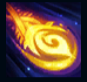
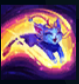
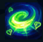
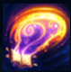

Yuumi
| Yuumi The Magical Cat | |
|---|---|
| Release date | 14.05.2019 |
| Class | Enchanter |
| Positions | Support |
| Resource | Mana |
| Range type | Ranged |
| Adaptive type | Magic |
| Base statistics | |||
| Health | 480 – 1670 | Mana | 400 – 1165 |
| Health regen. | 7 – 16.35 |
Mana regen. | 10 – 16.8 |
| Armor | 25 – 76 | Attack damage | 55 – 107.7 |
| Magic resist. | 25 – 30.1 | Crit. damage | 175% |
| Move. speed | 330 | Attack range | 500 |
Yuumi este o pisică magică din Orașul Bandle, care a fost odată companionul Norrei, o vrăjitoare yordle. În momentul în care stăpâna ei a dispărut în circumstanțe misterioase, Yuumi a devenit Străjerul Cărții Granițelor, un tom înzestrat cu conștiință. Cu ajutorul Cărții și a portalurilor din paginile sale, a pornit în căutarea Norrei. Acum, Yuumi e mereu în căutarea unor noi tovarăși voioși de drum, care să-i ofere afecțiune și pe care să-i apere cu scuturi luminoase și hotărâre înfocată. Deși Carte încearcă s-o convingă să nu devieze de la căutarea lor, Yuumi se lasă deseori atrasă de micile plăceri ale vieții – nimic nu-i place mai mult decât să tragă un pui de somn după ce a devorat un pește. Cu toate astea, în cele din urmă revine mereu la misiunea de a-și găsi prietena și stăpâna. | BUF ȘI SCUT! Periodic, când Yuumi atacă un campion, își reface mană și primește un scut care o urmează, protejându-i și pe ea, și pe aliatul de care este atașată. |
|||
|---|---|---|---|---|
 |
PROIECTIL AGIL Yuumi lansează un proiectil care îi provoacă daune primei ținte lovite. Dacă se deplasează cel puțin 1 secundă înainte să lovească ținta, proiectilul îi provoacă daune bonus și o încetinește. În timp ce e atașată, Yuumi poate controla proiectilul cu ajutorul cursorului. |
|||
 |
ÎMPREUNĂ! Yuumi își crește propria putere adaptivă și pe cea a unui aliat, în mod pasiv. La activare, Yuumi se năpustește spre aliatul-țintă și devine imposibil de țintit, mai puțin de către turnuri. |
|||
|  |
IUȚEALĂ ȘI VOIOȘIE O vindecă pe Yuumi și îi oferă bonusuri la viteza de mișcare și la viteza de atac. Dacă este atașată, îi oferă efectul aliatului ei. |
|||
 |
CAPITOL FINAL Yuumi pregătește șapte valuri de daune, țintuind inamicii loviți de cel puțin trei ori. Yuumi se poate mișca și atașa și poate folosi ''Iuțeală și voioșie'' în timpul pregătirii. |